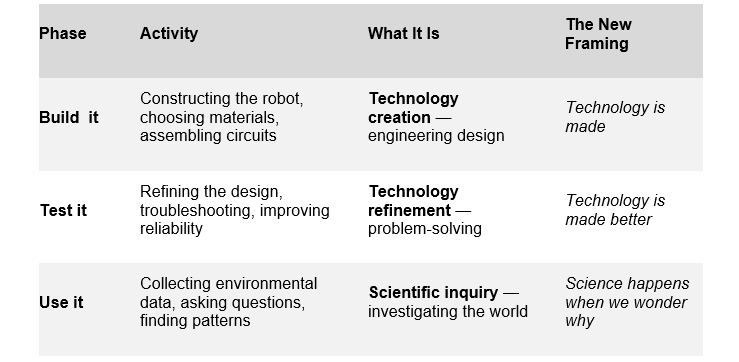

'Science Is Everywhere': A Sound Bite Doing Science Education a Disservice
"Science is not everywhere. But it can begin anywhere."
You have almost certainly heard it: "Science is everywhere". A media-friendly sound bite, said to teachers and repeated in curriculum documents. It is meant to make science feel accessible, relevant, and exciting. But I want to make a case, as an experienced scientist and STEM teacher, that this phrase is not only imprecise, it may actually be working against the very goals it is trying to achieve.
The phrase conflates three distinct things: technology, nature, and science itself. Blurring them does not help students become scientists. It helps them stay comfortable bystanders. And it quietly undermines the case for the knowledgeable, curious teachers that science education genuinely needs.
What We Actually Mean When We Say It
When someone points to a smartphone and says "science is everywhere", what they are really pointing at is technology; artefacts created through accumulated scientific understanding. The phone, the internet, AI: these are all technology. They are the visible, tangible outputs of science. They are products of engineers, designers, artists, and makers, applying scientific knowledge to solve real problems.
The same confusion appears when a person points at a tree and says "there is science in a tree" There is not, at least not yet. There are natural processes happening inside a tree; photosynthesis, transpiration, symbiosis. These occur without a human presence or a human understanding. Those processes did not become science by existing.
Science began the moment a curious investigator wondered what was actually happening inside the tree; its leaves, the trunk, or underground. A method was invented to make observations (maybe by counting, drawing, measuring), and trends or patterns found, or parts classified. Findings were shared so that others could confirm and build upon the discoveries.
To suggest science is simply “in the tree” implies those natural biological, chemical, and physical processes were self-evident, which profoundly disrespects the scientific work involved in discovering and describing them.
Science itself is not visible on a shelf in a book, or in nature. It is not a collection of objects or a set of natural processes. Science is a disciplined, creative, and deeply human process of asking questions, imagining possible answers, gathering evidence, and being willing to be wrong. You cannot point to science the way you can point to a robot or a tree. You can only point to the results of it.
So when we say "science is everywhere", we are pointing at either technology or nature and calling both of them something else. That confusion matters more than it might seem.
Why the Confusion Is Harmful
The first problem is that it implies science requires no specialist knowledge or training. If science is literally everywhere and obvious to everyone, then presumably anyone can do it without guidance. This subtly undermines the case for specialist science training for teachers. Why take time and resources in initial teacher training for science if the subject is self-evident? Why put subject matter experts into Biology, Chemistry or Physics classes? The phrase “Science is everywhere”, at its logical extreme, argues against its own importance.
The second problem is that it strips science of its most important characteristic: rigour. Real science demands disciplined observation, careful measurement, honest doubt, and the willingness to challenge comfortable assumptions. Science is not casual noticing. It is structured, sceptical, and methodical inquiry. In a world saturated with misinformation, that scepticism is one of the most critical thinking skills we can develop in young people. Telling students that science is simply all around them, effortless and ambient, works directly against it.
The third problem is that it conflates two things that are genuinely different and genuinely interdependent. As I have said in my keynote address and workshops, Science and Technology need each other, and progress in one drives progress in the other, but they are not the same activity. Scientists ask how or why the world works. Technologists and engineers use that understanding to build things. Both roles require creativity and rigour, and both are worth aspiring to. Blurring them into one phrase does neither justice.
A Better Way to Say It: Drawn From a Robot
I have been building a 3/4-scale replica of the B9 robot from the 1960s television series Lost in Space. This is not as a collector's display piece; it is a low cost but fully functional sensor-equipped mobile science laboratory. If your school doesn’t have a lab or equipment, build your own! School students can build, programme, and use B9 for real environmental data collection indoors and outdoors.
The project is built around a pedagogy I call Build it, Test it, Use it. The three phases make the science-technology distinction concrete and teachable.
"The robot itself is a tool, the science comes from how the students use it."
Build It: The Technology Phase
Every material choice (plywood, aluminium box section, castor wheels, DC gear motors) is a technology decision. This is the technology design cycle: build, test, and modify to meet a design goal. Students ask questions like "Will this material be strong enough?" or "What gear ratio is needed to rotate the torso slowly?" These are important problem-solving questions, but they are engineering questions. Students test a design against a specification, not a question about the natural world. This phase is about creating a reliable, functional tool. It is hands-on, creative, and immensely valuable, but it is not science.
Test It: Refining the Technology
Students test where to position sensors, how large components should be, and whether the robot looks, sounds, and feels right. Questions arise: how should modules be mounted so they do not overheat in sunlight? How does the metallic body interfere with the compass? These are design refinement questions, essential for creating technology that works reliably. This is still technology, not yet science.
Use It: The Science Begins
Now the purpose shifts entirely. The robot is no longer the object of study; it becomes the instrument for study. Only when the build is complete and the technology is tested do we truly enter the realm of science.
The robot carries a GPS navigation system and multiple sensors. It shares temperature, air pressure, location, and environmental trends in real time with phones, tablets, or laptops nearby. But that data is not science either. Science begins when a student looks at the data and asks a genuine question about the world.
When a student asks "Is the temperature different on the sunny side of the school versus the shady side?", and then uses the robot's sensors to gather evidence systematically, compares readings, identifies patterns, and draws a conclusion, that is science. If two students compare data, share conclusions and discuss differences that is science. The student supplies the question, the method, and the interpretation. The robot supplies the data.
The website captures this partnership beautifully: "He shows us what our eyes can't see, the data, and the trend—a walking talking science lab; my robot and my friend."
"The robot's song, Roll with Me B9, captures this sequence more clearly than most curriculum documents manage"
[Verse 3]
If a question is a doorway then your senses are the key.
Imagine what the answer is then go outside and see.
Collect the clues, compare them, find the pattern in the change,
A robot and a scientist - we bring the rules in range.
We gather all the data so the picture becomes clear.
The robot and the scientist; the proof is standing here!
Notice the sequence: question → imagine → observe → collect → compare → find patterns.
That is a scientific method in action. The robot is the tool that helps "collect the clues," but the thinking — the science — happens in the student's mind.
The chorus reinforces the partnership:
"Roll with me, B9, you see in infra-red, ... You add to what I'm seeing, you don't replace my eyes."
"The technology extends what the child scientist can sense. It does not replace the scientist."
A Better Science Sound Bite
After examining what the robot project actually demonstrates across all three phases, I believe a more honest and useful way for teachers to frame this distinction is:
"Technology is made. Nature is found. Science happens when we wonder why."
The first sentence honours the creativity and effort behind every human-built object; from a smartphone to a robot to a piece of code.
The second reminds students that the natural world exists whether we study it or not; it is there to be encountered, not constructed.
And the third gives science back its identity: not a collection of facts, not a category of objects, but an event; something that comes alive in the moment a question is asked seriously and someone cares enough to go and find out.
"...wonder why" applies equally well to technology and to nature. Why was this material chosen for the robot's torso? Why does photosynthesis happen only in sunlight? Why is the temperature cooler on the shaded side of the school?
The question is the same. The need for first-hand observation is the same. The adventure is the same.
What This Means for Maker Science in the Classroom
The three-phase structure of Build it, Test it, Use it, keeps science and technology distinct while showing how they depend on each other. The table below shows how the phases map onto the new framing:

Students make something real, and in doing so, they create a tool. Then they use that tool to ask the questions that science exists to answer:
Why did this fail?
Why does the temperature change here?
Why do we see this pattern?
In this model, technology is the doorway into science. The robot is made. The natural world is found. And science begins the moment a student wonders why.
A Practical Invitation for Teachers
The next time you are tempted to say "science is everywhere", pause and ask yourself: am I pointing at something made, something found, or an act of wondering?
- If you are pointing at a smartphone, a robot, a book, or AI, you are pointing at something made. Technology.
- If you are pointing at a tree, a river, or the sky, you are pointing at something found. Nature.
- If you are watching someone ask a question, gather evidence, and draw a conclusion, you are watching science happen.
All three are worth celebrating, and all three deserve to be named correctly.
Then invite students to move from one to the next.
- Look at the made thing and ask "Why it was designed that way?
- Look at the found thing and ask "What is actually happening inside it.
- Then ask: "How would we find out?
The shift from pointing at the world to questioning it is where science begins.
It does not happen by accident. It requires a knowledgeable, curious, sceptical teacher to make it happen.
Science is not everywhere. But it can begin anywhere.